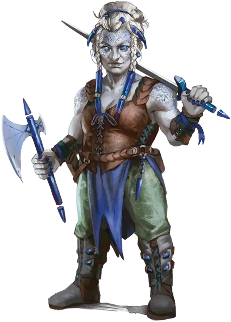

Избранный драконом
Dragon Chosen
Средний Гуманоид, любое мировоззрение

Класс Доспеха 17 (природный доспех)
Хиты 45 (7к8 + 14)
Скорость 30 футов
| мод | спас | ||
|---|---|---|---|
| СИЛ | 18 | +4 | +6 |
| ЛОВ | 18 | +4 | +6 |
| ТЕЛ | 14 | +2 | +4 |
| мод | спас | ||
|---|---|---|---|
| ИНТ | 10 | +0 | +0 |
| МДР | 13 | +1 | +1 |
| ХАР | 14 | +2 | +2 |
Навыки Атлетика +6, Восприятие +3
Чувства пассивное Восприятие 13
Языки Общий, Драконий
Опасность 3 (700 опыта)
Бонус мастерства +2
Действия
Мультиатака. Избранный совершает одну атаку Ручным топором и две атаки Коротким мечом.
Ручной топор. Рукопашная или Дальнобойная атака оружием: +6 к попаданию, досягаемость 5 фт. или дистанция 20/60 фт., одна цель. Попадание: 7 (1к6+4) рубящего урона. Попадание или Промах: Ручной топор магическим образом возвращается в руку избранного после совершения дальнобойной атаки.
Короткий меч. Рукопашная атака оружием: +6 к попаданию, досягаемость 5 фт., одна цель. Попадание: 7 (1к6+4) колющего урона.
Реакции
Язвительный упрёк. Сразу после того, как избранный получит урон от существа в пределах 5 фт. от него, он может совершить по нему атаку коротким мечом с преимуществом.
Описание
Избранные драконом - могучие воины, которые предлагают свои тела в качестве сосудов для мощи дракона. Они служат исполнителями воли своих хозяев; они часто сопровождают говорящих с драконами — и стремительно бросаются на их защиту, если чувствуют какие-либо дурные намерения. Избранные драконом искусны в ближнем бою, используя два вида оружия, чтобы разорвать своих врагов.
Драконьи последователи. Драконы могут похвастаться множеством приспешников, учеников, наемников, послушников и рабов. Драконьи Последователи - это те слуги, чья преданность дракону приближается к фанатичному почитанию и которые получают взамен от дракона магическую силу.
Драконьи последователи могут служить и почитать любого дракона, и их поведение и убеждения отражают дух дракона, которому они служат. У многих последователей дракона есть личные истории о доброжелательных драконах, которые поделились великими знаниями, защитили их город или спасли их жизни во время какого-нибудь безрассудного приключения. Другие последователи стремятся раскрыть тайны драконьей природы и жить жизнью, достойной награды дракона, и они мечтают о мире, где драконы могли бы жить среди них в качестве их правителей.